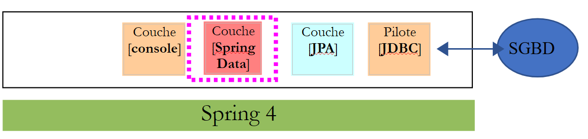
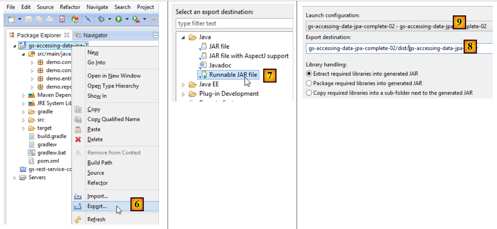
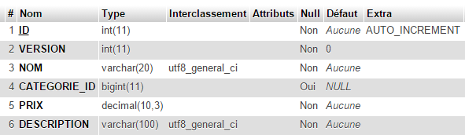
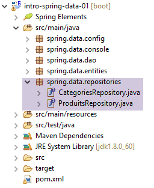

11. [课程]：使用 Spring Data 管理关系型数据库
关键词：多层架构、Spring、依赖注入、JPA（Java Persistence API）、Spring Data。
我们将使用 Spring 生态系统中的组件 [Spring Data] 来实现作业中的 [DAO] 层。[Spring Data] 依赖于 JPA（Java Persistence API）层，该层允许 [DAO] 层操作对象而非 SQL 语句。最终，[DAO] 层并不知道它正在与数据库交互，它只了解 [Spring Data] 层的接口。
 |
我们将首先通过两个示例来探索 [Spring Data]。
11.1. 支持
 |
- 在[1]中，[support / chap-11]文件夹包含三个Eclipse项目；
- 在 [2] 中，包含用于创建本章示例数据库的 SQL 脚本；
11.2. 示例 1
Spring 网站提供了大量入门教程 [http://spring.io/guides]。我们将利用其中一个教程来介绍 Spring Data。为此，我们将使用 Spring Tool Suite (STS)。
 |
- 在 [1] 中，我们导入了 [spring.io/guides] 中的一个教程；
 |
- 在 [2] 中，我们选择了 [Accessing Data Jpa] 教程，该教程演示了如何使用 Spring Data 访问数据库；
- 在[3]中，我们选择了一个由Maven配置的项目；
- 在[4]中，该教程提供两种形式：[initial]（初始版），即一个空模板，需根据教程逐步填充；以及[complete]（完整版），即教程的最终版本。我们选择后者；
- 在[5]中，您可以选择在浏览器中查看教程；
- 在 [6] 中，是最终项目。
11.2.1. 项目的 Maven 配置
项目的 Maven 依赖项在 [pom.xml] 文件中配置：
<groupId>org.springframework</groupId>
<artifactId>gs-accessing-data-jpa</artifactId>
<version>0.1.0</version>
<parent>
<groupId>org.springframework.boot</groupId>
<artifactId>spring-boot-starter-parent</artifactId>
<version>1.1.10.RELEASE</version>
</parent>
<dependencies>
<dependency>
<groupId>org.springframework.boot</groupId>
<artifactId>spring-boot-starter-data-jpa</artifactId>
</dependency>
<dependency>
<groupId>com.h2database</groupId>
<artifactId>h2</artifactId>
</dependency>
</dependencies>
<properties>
<!-- use UTF-8 for everything -->
<project.build.sourceEncoding>UTF-8</project.build.sourceEncoding>
<project.reporting.outputEncoding>UTF-8</project.reporting.outputEncoding>
<start-class>hello.Application</start-class>
</properties>
- 第 5–9 行：定义一个父 Maven 项目。该项目定义了项目的大部分依赖项。这些依赖项可能已经足够，此时无需添加额外依赖；也可能不够，此时会自动添加缺失的依赖；
- 第 12–15 行：定义对 [spring-boot-starter-data-jpa] 的依赖。该工件包含 Spring Data 类；
- 第 16–19 行：定义对 H2 数据库管理系统 (DBMS) 的依赖，它允许您创建和管理内存数据库。
让我们来看看这些依赖项提供的类：
 |  |  |
数量众多：
- 其中一部分属于 Spring 生态系统（以 spring 开头的）；
- 另一些属于 Hibernate 生态系统（如 hibernate、jboss），我们在此处使用的正是其 JPA 实现；
- 还有一些是测试库（junit、hamcrest）；
- 还有日志库（log4j、logback、slf4j）；
我们将保留所有这些。对于生产环境中的应用程序，应仅保留必要的组件。
在 [pom.xml] 文件的第 26 行，我们看到以下内容：
<start-class>hello.Application</start-class>
该行与以下几行相关联：
<build>
<plugins>
<plugin>
<artifactId>maven-compiler-plugin</artifactId>
</plugin>
<plugin>
<groupId>org.springframework.boot</groupId>
<artifactId>spring-boot-maven-plugin</artifactId>
</plugin>
</plugins>
</build>
第 6–9 行：[spring-boot-maven-plugin] 允许您生成应用程序的可执行 JAR 文件。随后，[pom.xml] 文件的第 26 行指定了该 JAR 文件中的可执行类。
11.2.2. [JPA] 层
数据库访问通过 [JPA] 层（Java Persistence API）进行处理：
 |
 |
该应用程序功能简单，用于管理 [Customer] 实体。 [Customer] 类属于 [JPA] 层，其定义如下：
package hello;
import javax.persistence.Entity;
import javax.persistence.GeneratedValue;
import javax.persistence.GenerationType;
import javax.persistence.Id;
@Entity
public class Customer {
@Id
@GeneratedValue(strategy = GenerationType.AUTO)
private long id;
private String firstName;
private String lastName;
protected Customer() {
}
public Customer(String firstName, String lastName) {
this.firstName = firstName;
this.lastName = lastName;
}
@Override
public String toString() {
return String.format("Customer[id=%d, firstName='%s', lastName='%s']", id, firstName, lastName);
}
}
客户拥有一个 ID [id]、一个名字 [firstName] 和一个姓氏 [lastName]。每个 [Customer] 实例代表数据库表中的一行。
- 第 8 行：JPA 注解，确保 [Customer] 实例的持久化操作（创建、读取、更新、删除）将由 JPA 实现管理。根据 Maven 依赖项，我们可以看出正在使用 JPA/Hibernate 实现；
- 第 11–12 行：JPA 注解，用于将 [id] 字段与 [Customer] 表的主键关联。第 12 行表明 JPA 实现将使用所用数据库管理系统（此处为 H2）特有的主键生成方法；
没有其他 JPA 注解。因此将使用默认值：
- [Customer] 表将以类名命名，即 [Customer]；
- 该表的列名将采用类字段的名称：[id, firstName, lastName]，需注意表列名不区分大小写；
请注意，所使用的 JPA 实现从未被命名。
11.2.3. [Spring Data] 层
[CustomerRepository] 类实现了 [Customer] 表的访问层。其代码如下：
 |
 |
package hello;
import java.util.List;
import org.springframework.data.repository.CrudRepository;
public interface CustomerRepository extends CrudRepository<Customer, Long> {
List<Customer> findByLastName(String lastName);
}
因此，这是一个接口而非类（第 7 行）。它继承了 [CrudRepository] 接口，这是一个 Spring Data 接口（第 5 行）。该接口由两种类型参数化：第一种是受管元素的类型，此处为 [Customer] 类型；第二种是受管元素的主键类型，此处为 [Long] 类型。 [CrudRepository] 接口如下所示：
package org.springframework.data.repository;
import java.io.Serializable;
@NoRepositoryBean
public interface CrudRepository<T, ID extends Serializable> extends Repository<T, ID> {
<S extends T> S save(S entity);
<S extends T> Iterable<S> save(Iterable<S> entities);
T findOne(ID id);
boolean exists(ID id);
Iterable<T> findAll();
Iterable<T> findAll(Iterable<ID> ids);
long count();
void delete(ID id);
void delete(T entity);
void delete(Iterable<? extends T> entities);
void deleteAll();
}
此接口定义了可在 JPA T 类型上执行的 CRUD（创建 – 读取 – 更新 – 删除）操作：
- 第 8 行：save 方法允许将 T 实体持久化到数据库中。它使用 DBMS 分配的主键将实体持久化。它还允许更新由主键 id 标识的 T 实体。这两种操作的选择取决于主键 id 的值：如果为 null，则执行持久化操作；否则，执行更新操作；
- 第 10 行：与上文相同，但针对实体列表；
- 第 12 行：findOne 方法根据主键 id 检索实体 T；
- 第 22 行：delete 方法允许删除通过主键 id 标识的实体 T；
- 第 24–28 行：[delete] 方法的变体；
- 第 16 行：[findAll] 方法检索所有已持久化的 T 实体；
- 第 18 行：与上文相同，但仅限于已提供标识符列表的实体；
让我们回到 [CustomerRepository] 接口：
package hello;
import java.util.List;
import org.springframework.data.repository.CrudRepository;
public interface CustomerRepository extends CrudRepository<Customer, Long> {
List<Customer> findByLastName(String lastName);
}
- 第 9 行允许您根据 [lastName] 检索 [Customer]；
关于 [DAO] 层的内容就到这里。上述接口没有实现类，它由 [Spring Data] 在运行时自动生成。[CrudRepository] 接口的方法会自动实现。至于添加到 [CustomerRepository] 接口中的方法，则视情况而定。让我们回到 [Customer] 的定义：
private long id;
private String firstName;
private String lastName;
第 9 行中的方法由 [Spring Data] 自动实现，因为它引用了 [Customer] 类的 [lastName] 字段（第 3 行）。当遇到待实现接口中的 [findBySomething] 方法时，Spring Data 会使用以下 JPQL（Java 持久化查询语言）查询来实现它：
因此，类型 T 必须包含一个名为 [something] 的字段。因此，该方法
将通过类似于以下内容的代码实现：
return [em].createQuery("select c from Customer c where c.lastName=:value").setParameter("value",lastName).getResultList()
其中 [em] 指代 JPA 持久化上下文。这仅在 [Customer] 类中存在名为 [lastName] 的字段时才可行，而本例中确实存在该字段。
综上所述，在简单场景下，Spring Data 允许我们通过一个简单的接口来实现 [DAO] 层。
11.2.4. [控制台] 层
 |
 |
[Application] 类如下所示：
package hello;
import org.springframework.beans.factory.annotation.Autowired;
import org.springframework.boot.CommandLineRunner;
import org.springframework.boot.SpringApplication;
import org.springframework.boot.autoconfigure.SpringBootApplication;
@SpringBootApplication
public class Application implements CommandLineRunner {
@Autowired
CustomerRepository repository;
public static void main(String[] args) {
SpringApplication.run(Application.class);
}
@Override
public void run(String... strings) throws Exception {
// save a couple of customers
repository.save(new Customer("Jack", "Bauer"));
repository.save(new Customer("Chloe", "O'Brian"));
repository.save(new Customer("Kim", "Bauer"));
repository.save(new Customer("David", "Palmer"));
repository.save(new Customer("Michelle", "Dessler"));
// fetch all customers
System.out.println("Customers found with findAll():");
System.out.println("-------------------------------");
for (Customer customer : repository.findAll()) {
System.out.println(customer);
}
System.out.println();
// fetch an individual customer by ID
Customer customer = repository.findOne(1L);
System.out.println("Customer found with findOne(1L):");
System.out.println("--------------------------------");
System.out.println(customer);
System.out.println();
// fetch customers by last name
System.out.println("Customer found with findByLastName('Bauer'):");
System.out.println("--------------------------------------------");
for (Customer bauer : repository.findByLastName("Bauer")) {
System.out.println(bauer);
}
}
}
- 第 9 行：该类实现了 [CommandLineRunner] 接口，这是一个 [Spring Boot] 接口（第 4 行）。该接口仅有一个方法，即第 19 行中的方法；
- 第 8 行：@SpringBootApplication 是一个注解，它整合了多个 [Spring Boot] 注解：
- @Configuration：表示该类是配置类；
- @EnableAutoConfiguration：指示 [Spring Boot] 根据各种属性（特别是项目类路径中的内容）自动创建若干 Bean。由于 Hibernate 库位于类路径中，因此 [entityManagerFactory] Bean 将使用 Hibernate 实现。由于 H2 DBMS 库位于类路径中，因此 [dataSource] Bean 将使用 H2 实现。 在 [dataSource] Bean 中，我们还必须定义用户名和密码。在此，Spring Boot 将使用默认的 H2 管理员，该管理员没有密码。由于 [spring-tx] 库位于类路径中，因此将使用 Spring 的事务管理器；
- @EnableWebMvc：如果 [spring-mvc] 库位于类路径中。此时，将对 Web 应用程序进行自动配置；
- @ComponentScan：用于告知 Spring 在何处查找其他 Bean、配置和服务。此处默认会在包含注解类（即 [hello] 包）的包中进行搜索。 因此，系统将找到 [Customer] 和 [CustomerRepository] 类。由于前者带有 [@Entity] 注解，它将被归类为实体并由 Hibernate 管理；由于后者继承了 [CrudRepository] 接口，它将被注册为 Spring Bean；
- 第 11–12 行：将 [CustomerRepository] Bean 注入到主类的代码中；
- 第 15 行：执行 Spring Boot 项目中 [SpringApplication] 类的静态 [run] 方法。其参数是带有 [Configuration] 或 [EnableAutoConfiguration] 注解的类。随后将执行之前所述的所有操作。结果是一个 Spring 应用上下文，即一组由 Spring 管理的 Bean；
以下操作仅使用了实现 [CustomerRepository] 接口的 Bean 的方法。控制台输出如下：
- 第 1-8 行：Spring Boot 项目徽标；
- 第 9 行：执行 [hello.Application] 类；
- 第 10 行：[AnnotationConfigApplicationContext] 是一个实现 Spring [ApplicationContext] 接口的类。它是一个 Bean 容器；
- 第 11 行：[entityManagerFactory] Bean 通过 Spring 类 [LocalContainerEntityManagerFactory] 实现；
- 第 12 行：出现了 [Hibernate]。这是所选的 JPA 实现；
- 第 19 行：Hibernate 方言是与数据库管理系统 (DBMS) 配合使用的 SQL 变体。此处的 [H2Dialect] 方言表明 Hibernate 将与 H2 数据库管理系统配合使用；
- 第 21–22 行：创建数据库。创建了 [CUSTOMER] 表。这意味着 Hibernate 已被配置为根据 JPA 定义生成表，本例中即 [Customer] 类的 JPA 定义；
- 第 26–30 行：接口 [findAll] 方法的返回结果；
- 第 34 行：接口 [findOne] 方法的返回结果；
- 第 38–39 行：[findByLastName] 方法的结果；
- 第 41 行及后续行：来自 Spring 上下文闭包的日志。
11.2.5. Spring Data 项目的手动配置
我们将前一个项目复制为 [gs-accessing-data-jpa-02] 项目：
 |
在这个新项目中，我们将不再依赖 Spring Boot 提供的自动配置，而是手动进行配置。如果默认配置不符合我们的需求，这种做法会很有用。
首先，我们将在 [pom.xml] 文件中指定必要的依赖项：
<?xml version="1.0" encoding="UTF-8"?>
<project xmlns="http://maven.apache.org/POM/4.0.0" xsi:schemaLocation="http://maven.apache.org/POM/4.0.0 http://maven.apache.org/maven-v4_0_0.xsd"
xmlns:xsi="http://www.w3.org/2001/XMLSchema-instance">
<modelVersion>4.0.0</modelVersion>
<groupId>org.springframework</groupId>
<artifactId>gs-accessing-data-jpa-02</artifactId>
<version>0.1.0</version>
<parent>
<groupId>org.springframework.boot</groupId>
<artifactId>spring-boot-starter-parent</artifactId>
<version>1.2.7.RELEASE</version>
</parent>
<dependencies>
<!-- Spring Data -->
<dependency>
<groupId>org.springframework.data</groupId>
<artifactId>spring-data-jpa</artifactId>
</dependency>
<!-- Hibernate -->
<dependency>
<groupId>org.hibernate</groupId>
<artifactId>hibernate-entitymanager</artifactId>
</dependency>
<!-- H2 Database -->
<dependency>
<groupId>com.h2database</groupId>
<artifactId>h2</artifactId>
</dependency>
<!-- Tomcat JDBC -->
<dependency>
<groupId>org.apache.tomcat</groupId>
<artifactId>tomcat-jdbc</artifactId>
</dependency>
</dependencies>
<properties>
<!-- use UTF-8 for everything -->
<project.build.sourceEncoding>UTF-8</project.build.sourceEncoding>
<project.reporting.outputEncoding>UTF-8</project.reporting.outputEncoding>
</properties>
<build>
<plugins>
<plugin>
<groupId>org.springframework.boot</groupId>
<artifactId>spring-boot-maven-plugin</artifactId>
</plugin>
</plugins>
</build>
<repositories>
<repository>
<id>spring-releases</id>
<name>Spring Releases</name>
<url>https://repo.spring.io/libs-release</url>
</repository>
<repository>
<id>org.jboss.repository.releases</id>
<name>JBoss Maven Release Repository</name>
<url>https://repository.jboss.org/nexus/content/repositories/releases</url>
</repository>
</repositories>
<pluginRepositories>
<pluginRepository>
<id>spring-releases</id>
<name>Spring Releases</name>
<url>https://repo.spring.io/libs-release</url>
</pluginRepository>
</pluginRepositories>
</project>
- 第 10–14 行：我们将使用的父 Maven 项目及其库；
- 第 18–21 行：用于访问数据库的 Spring Data；
- 第 23–26 行：JPA 规范的 Hibernate 实现；
- 第 28–31 行：H2 数据库管理系统；
- 第 33–36 行：数据库通常与连接池配合使用，以避免反复打开和关闭连接。此处使用的实现是 [tomcat-jdbc]；
在新项目中，[Customer] 实体和 [CustomerRepository] 接口保持不变。我们将修改 [Application] 类，将其拆分为两个类：
- [Config]，作为配置类；
- [Main]，作为可执行类；
 |
可执行类 [Application] 现如下所示：
package console;
import org.springframework.context.annotation.AnnotationConfigApplicationContext;
import repositories.CustomerRepository;
import config.AppConfig;
import entities.Customer;
public class Application {
public static void main(String[] args) {
// instantiation Spring context
AnnotationConfigApplicationContext context = new AnnotationConfigApplicationContext(AppConfig.class);
CustomerRepository repository = context.getBean(CustomerRepository.class);
// save a couple of customers
repository.save(new Customer("Jack", "Bauer"));
repository.save(new Customer("Chloe", "O'Brian"));
repository.save(new Customer("Kim", "Bauer"));
repository.save(new Customer("David", "Palmer"));
repository.save(new Customer("Michelle", "Dessler"));
...
// closing context
context.close();
}
}
- 第 9 行：[Application] 类不再包含任何配置注解；
- 第 3–7 行：请注意，这里不再包含任何 [Spring Boot] 包的导入；
- 第 12 行：我们实例化 Spring Bean。我们获取 Spring 上下文，其中包含对已创建 Bean 的引用；
- 第 13 行：我们请求 [CustomerRepository] Bean 的引用；
package config;
import javax.persistence.EntityManagerFactory;
import org.apache.tomcat.jdbc.pool.DataSource;
import org.springframework.context.annotation.Bean;
import org.springframework.context.annotation.Configuration;
import org.springframework.data.jpa.repository.config.EnableJpaRepositories;
import org.springframework.orm.jpa.JpaTransactionManager;
import org.springframework.orm.jpa.JpaVendorAdapter;
import org.springframework.orm.jpa.LocalContainerEntityManagerFactoryBean;
import org.springframework.orm.jpa.vendor.Database;
import org.springframework.orm.jpa.vendor.HibernateJpaVendorAdapter;
import org.springframework.transaction.PlatformTransactionManager;
import org.springframework.transaction.annotation.EnableTransactionManagement;
//@EnableTransactionManagement
@EnableJpaRepositories(basePackages = { "repositories" })
@Configuration
// @ComponentScan(basePackages={"package1","package2"})
public class AppConfig {
// h2 database
@Bean
public DataSource dataSource() {
// data source TomcatJdbc
DataSource dataSource = new DataSource();
// configuration access JDBC
dataSource.setDriverClassName("org.h2.Driver");
dataSource.setUrl("jdbc:h2:./demo");
dataSource.setUsername("sa");
dataSource.setPassword("");
// an initially open connection
dataSource.setInitialSize(1);
// result
return dataSource;
}
// the provider JPA
@Bean
public JpaVendorAdapter jpaVendorAdapter() {
HibernateJpaVendorAdapter hibernateJpaVendorAdapter = new HibernateJpaVendorAdapter();
hibernateJpaVendorAdapter.setShowSql(false);
hibernateJpaVendorAdapter.setGenerateDdl(true);
hibernateJpaVendorAdapter.setDatabase(Database.H2);
return hibernateJpaVendorAdapter;
}
// EntityManagerFactory
@Bean
public EntityManagerFactory entityManagerFactory(JpaVendorAdapter jpaVendorAdapter, DataSource dataSource) {
LocalContainerEntityManagerFactoryBean factory = new LocalContainerEntityManagerFactoryBean();
factory.setJpaVendorAdapter(jpaVendorAdapter);
factory.setPackagesToScan("entities");
factory.setDataSource(dataSource);
factory.afterPropertiesSet();
return factory.getObject();
}
// Transaction manager
@Bean
public PlatformTransactionManager transactionManager(EntityManagerFactory entityManagerFactory) {
JpaTransactionManager txManager = new JpaTransactionManager();
txManager.setEntityManagerFactory(entityManagerFactory);
return txManager;
}
}
- 第 17 行：[@EnableTransactionManagement] 注解表示 [CrudRepository] 接口的方法必须在事务内执行。由于这是默认行为，因此该注解已被注释掉；
- 第 18 行：[@EnableJpaRepositories] 注解指定了 Spring Data [CrudRepository] 接口所在的目录。这些接口将作为 Spring 组件存在，并在 Spring 上下文中可用；
- 第 19 行：[@Configuration] 注解将 [Config] 类定义为 Spring 配置类；
- 第 20 行：[@ComponentScan] 注解列出了 Spring 应搜索组件的目录。Spring 组件是指带有 @Service、@Component、@Controller 等 Spring 注解的类。此处除了 [AppConfig] 类中定义的组件外没有其他组件，因此该注解已被注释掉；
- 第 24–37 行：定义数据源，即 H2 数据库。正是第 25 行的 @Bean 注解，使得该方法创建的对象成为 Spring 管理的组件。此处的方法名可以是任意名称。但是，如果第 51 行的 EntityManagerFactory 不存在且通过自动配置定义，则该方法必须命名为 [dataSource]；
- 第 30 行：数据库将命名为 [demo]，并生成在项目文件夹中；
- 第 40–47 行：定义所使用的 JPA 实现，本例中为 Hibernate 实现。此处的方法名可以是任意名称；
- 第 43 行：不记录 SQL 日志；
- 第 44 行：若数据库不存在，则创建数据库；
- 第 50–58 行：定义将管理 JPA 持久化的 EntityManagerFactory。该方法必须命名为 [entityManagerFactory]；
- 第 51 行：该方法接收两个参数，其类型分别为之前定义的两个 Bean。Spring 将构建这些 Bean 并作为方法参数进行注入；
- 第 53 行：设置要使用的 JPA 实现；
- 第 54 行：指定 JPA 实体的存储目录；
- 第 55 行：设置待管理的数据源；
- 第 61–66 行：事务管理器。该方法必须命名为 [transactionManager]。它接收第 51–58 行定义的 Bean 作为参数；
- 第 64 行：将事务管理器与 EntityManagerFactory 关联；
上述方法可以按任意顺序定义。
运行该项目将得到相同的结果。项目文件夹中会出现一个新文件，即 H2 数据库文件：
 |
11.2.6. 创建可执行归档文件
 |
- 在 [1] 中：创建一个运行时配置；
- 在 [2] 中：类型为 [Java 应用程序]
- 在 [3] 中：指定要运行的项目（使用“浏览”按钮）；
- 在 [4] 中：指定要运行的类；
- 在 [5] 中：运行配置的名称——可以是任意名称；
 |
- 在 [6] 中：导出项目；
- 在 [7] 中：作为可执行 JAR 归档文件；
- 在 [8] 中：指定要创建的可执行文件的路径和名称；
- 在 [9] 中：在 [5] 中创建的运行时配置的名称；
 |
- 在 [10] 中，生成的归档文件；
完成上述操作后，在包含可执行归档文件的文件夹中打开一个控制台：
该归档文件的执行方式如下：
.....\dist>java -jar gs-accessing-data-jpa-02.jar
控制台显示的结果如下：
11.3. 示例 2
11.3.1. 简介
我们将重新审视之前用于介绍 JDBC API 的产品表示例，并构建以下架构：
 |
[dbintrospringjpa] 数据库包含两个表：[PRODUCTS] 和 [CATEGORIES]。[CATEGORIES] 表的结构如下：
 |
- [ID]：主键，采用 AUTO_INCREMENT 模式；
- [VERSION]: 记录版本号；
- [NAME]: 类别名称 - 唯一；
[PRODUCTS] 表如下所示：
 |
- [ID]：主键，采用 AUTO_INCREMENT 模式；
- [VERSION]: 记录版本号；
- [NAME]: 产品名称 - 唯一；
- [CATEGORY_ID]：分类 ID——[CATEGORIES.ID] 字段的外键；
- [PRICE]: 其价格；
- [DESCRIPTION]: 产品描述；
任务：使用支持材料中的 [dbintrospringdata.sql] SQL 脚本创建 [dbintrospringdata] 数据库：
11.3.2. 创建 Maven 项目
要创建 Spring Data 项目模板，请按照以下步骤操作：
 |
- 在 [1] 中，创建一个新项目；
- 在 [2] 中，选择 [Spring Starter Project] 类型；
- 生成的项目将是一个 Maven 项目。在 [3] 中，指定项目组名称；
- 在 [4] 中，指定项目构建时将生成的工件（此处为 JAR 文件）的名称；
- 在 [5] 中：Eclipse 项目名称——可以是任意名称（不必与 [4] 相同）；
- 在 [7] 中：指定您正在创建一个使用 MySQL 数据库管理系统（DBMS）并包含 [JPA] 层的项目。此类项目所需的依赖项随后将被包含在 [pom.xml] 文件中；
 |
- 在 [8] 中，输入项目文件夹的名称；
- 在 [9] 中，完成向导；
 |
- 在 [10] 中：生成的项目；
[pom.xml] 文件包含 JPA 项目所需的依赖项：
<?xml version="1.0" encoding="UTF-8"?>
<project xmlns="http://maven.apache.org/POM/4.0.0" xmlns:xsi="http://www.w3.org/2001/XMLSchema-instance"
xsi:schemaLocation="http://maven.apache.org/POM/4.0.0 http://maven.apache.org/xsd/maven-4.0.0.xsd">
<modelVersion>4.0.0</modelVersion>
<groupId>istia.st.springdata</groupId>
<artifactId>intro-spring-data-01</artifactId>
<version>0.0.1-SNAPSHOT</version>
<packaging>jar</packaging>
<name>intro-spring-data-01</name>
<description>démo spring data avec table de produits</description>
<parent>
<groupId>org.springframework.boot</groupId>
<artifactId>spring-boot-starter-parent</artifactId>
<version>1.2.2.RELEASE</version>
<relativePath/> <!-- lookup parent from repository -->
</parent>
<properties>
<project.build.sourceEncoding>UTF-8</project.build.sourceEncoding>
<start-class>demo.IntroSpringData01Application</start-class>
<java.version>1.7</java.version>
</properties>
<dependencies>
<dependency>
<groupId>org.springframework.boot</groupId>
<artifactId>spring-boot-starter-data-jpa</artifactId>
</dependency>
<dependency>
<groupId>mysql</groupId>
<artifactId>mysql-connector-java</artifactId>
<scope>runtime</scope>
</dependency>
<dependency>
<groupId>org.springframework.boot</groupId>
<artifactId>spring-boot-starter-test</artifactId>
<scope>test</scope>
</dependency>
</dependencies>
<build>
<plugins>
<plugin>
<groupId>org.springframework.boot</groupId>
<artifactId>spring-boot-maven-plugin</artifactId>
</plugin>
</plugins>
</build>
</project>
- 第 14–19 行：父级 Maven 项目——定义了大量带版本号的库——我们将这些库作为 Maven 依赖项使用，但未指定其版本；
- 第 28–31 行：JPA 所需的依赖项——将包含 [Spring Data]；
- 第 32–36 行：对 MySQL JDBC 驱动程序的依赖；
- 第 37–41 行：集成 Spring 的 JUnit 测试所需的依赖项；
可执行类 [Application] 本身不执行任何操作，但已预先配置：
package demo;
import org.springframework.boot.SpringApplication;
import org.springframework.boot.autoconfigure.SpringBootApplication;
@SpringBootApplication
public class IntroSpringData01Application {
public static void main(String[] args) {
SpringApplication.run(IntroSpringData01Application.class, args);
}
}
- [@SpringBootApplication] 注解将该类设为项目的自动配置类；
测试类 [ApplicationTests] 虽然不执行任何操作，但已预先配置好：
package demo;
import org.junit.Test;
import org.junit.runner.RunWith;
import org.springframework.boot.test.SpringApplicationConfiguration;
import org.springframework.test.context.junit4.SpringJUnit4ClassRunner;
@RunWith(SpringJUnit4ClassRunner.class)
@SpringApplicationConfiguration(classes = IntroSpringData01Application.class)
public class IntroSpringData01ApplicationTests {
@Test
public void contextLoads() {
}
}
- 第 9 行：[@SpringApplicationConfiguration] 注解允许使用 [Application] 配置文件。因此，测试类将能够使用该文件中定义的所有 Bean；
- 第 8 行：[@RunWith] 注解实现了 Spring 与 JUnit 的集成：该类可作为 JUnit 测试执行。[@RunWith] 是 JUnit 注解（第 4 行），而 [SpringJUnit4ClassRunner] 类是 Spring 类（第 6 行）；
现在我们已经有了一个 JPA 应用程序的骨架，可以继续完善它，编写与产品数据库相关的持久层项目。
11.3.3. Eclipse 项目
我们将按以下方式扩展前一个项目：
 |
- [AppConfig.java]：Spring 项目的配置类；
- [Main.java]：项目的可执行类；
- [IDao.java]：[DAO] 层的接口；
- [Dao.java]：[DAO]层的实现类；
- [AbstractEntity.java]：[Product] 和 [Category] 类的父类；
- [Product.java]：与数据库中 [PRODUCTS] 表中某行对应的类；
- [Category.java]：与数据库中 [CATEGORIES] 表中某行对应的类；
- [ProductsRepository]：用于访问 [PRODUCTS] 表的 Spring Data 接口；
- [CategoriesRepository]：用于访问 [CATEGORIES] 表的 Spring Data 接口；
- [pom.xml]：Maven 项目配置文件；
该项目实现了以下架构：
 |
[DAO] 层仅能看到由 [Spring Data] 实现的层。
11.3.4. Maven 配置
Maven 项目的 [pom.xml] 文件如下：
<?xml version="1.0" encoding="UTF-8"?>
<project xmlns="http://maven.apache.org/POM/4.0.0" xmlns:xsi="http://www.w3.org/2001/XMLSchema-instance"
xsi:schemaLocation="http://maven.apache.org/POM/4.0.0 http://maven.apache.org/xsd/maven-4.0.0.xsd">
<modelVersion>4.0.0</modelVersion>
<groupId>istia.st.springdata</groupId>
<artifactId>intro-spring-data-01</artifactId>
<version>0.0.1-SNAPSHOT</version>
<packaging>jar</packaging>
<name>intro-spring-data-01</name>
<description>démo spring data avec table de produits</description>
<parent>
<groupId>org.springframework.boot</groupId>
<artifactId>spring-boot-starter-parent</artifactId>
<version>1.2.7.RELEASE</version>
</parent>
<dependencies>
<!-- Spring Data -->
<dependency>
<groupId>org.springframework.data</groupId>
<artifactId>spring-data-jpa</artifactId>
</dependency>
<!-- Hibernate -->
<dependency>
<groupId>org.hibernate</groupId>
<artifactId>hibernate-entitymanager</artifactId>
</dependency>
<!-- MySQL Database -->
<dependency>
<groupId>mysql</groupId>
<artifactId>mysql-connector-java</artifactId>
</dependency>
<!-- Tomcat JDBC -->
<dependency>
<groupId>org.apache.tomcat</groupId>
<artifactId>tomcat-jdbc</artifactId>
</dependency>
<!-- library jSON -->
<dependency>
<groupId>com.fasterxml.jackson.core</groupId>
<artifactId>jackson-core</artifactId>
</dependency>
<dependency>
<groupId>com.fasterxml.jackson.core</groupId>
<artifactId>jackson-databind</artifactId>
</dependency>
<!-- Google Guava -->
<dependency>
<groupId>com.google.guava</groupId>
<artifactId>guava</artifactId>
<version>16.0.1</version>
</dependency>
<!-- Spring Boot Test -->
<dependency>
<groupId>org.springframework.boot</groupId>
<artifactId>spring-boot-starter-test</artifactId>
<scope>test</scope>
</dependency>
<!-- Spring Boot -->
<dependency>
<groupId>org.springframework.boot</groupId>
<artifactId>spring-boot</artifactId>
<scope>test</scope>
</dependency>
<!-- log library -->
<dependency>
<groupId>org.springframework.boot</groupId>
<artifactId>spring-boot-starter-logging</artifactId>
</dependency>
</dependencies>
<properties>
<project.build.sourceEncoding>UTF-8</project.build.sourceEncoding>
<java.version>1.8</java.version>
</properties>
<build>
<plugins>
<plugin>
<groupId>org.apache.maven.plugins</groupId>
<artifactId>maven-surefire-plugin</artifactId>
<version>2.18.1</version>
</plugin>
</plugins>
</build>
</project>
此配置即第11.2.5节中使用并讲解的配置。我们添加以下库：
- 第 42–49 行：一个 JSON 库，用于 [Product] 类的 [toString] 方法；
- 第 51–55 行：[Google Guava] 库，该库提供了用于管理元素集合的实用方法。它将被实现 [DAO] 层的 [Dao] 类所使用；
- 第 56–67 行：JUnit 测试所需的库；
- 第 69–72 行：日志记录库；
- 第 81–86 行：项目所需的 Maven 插件；
11.3.5. [JPA] 层的实体
[DAO] 层[Console] 层[JPA] 层[JDBC] 驱动程序[Spring Data] 层Spring 4DBMS
 |
11.3.5.1. [AbstractEntity] 类
[AbstractEntity] 类如下所示：
package spring.data.entities;
import javax.persistence.Column;
import javax.persistence.GeneratedValue;
import javax.persistence.GenerationType;
import javax.persistence.Id;
import javax.persistence.MappedSuperclass;
import javax.persistence.Version;
import com.fasterxml.jackson.core.JsonProcessingException;
import com.fasterxml.jackson.databind.ObjectMapper;
@MappedSuperclass
public abstract class AbstractEntity {
// properties
@Id
@GeneratedValue(strategy = GenerationType.IDENTITY)
@Column(name = "ID")
protected Long id;
@Version
@Column(name = "VERSION")
protected Long version;
// manufacturers
public AbstractEntity() {
}
public AbstractEntity(Long id, Long version) {
this.id = id;
this.version = version;
}
// redefine [equals] and [hashcode]
@Override
public int hashCode() {
return (id != null ? id.hashCode() : 0);
}
@Override
public boolean equals(Object entity) {
if (!(entity instanceof AbstractEntity)) {
return false;
}
String class1 = this.getClass().getName();
String class2 = entity.getClass().getName();
if (!class2.equals(class1)) {
return false;
}
AbstractEntity other = (AbstractEntity) entity;
return id != null && this.id.longValue() == other.id.longValue();
}
// signature jSON
public String toString() {
ObjectMapper mapper = new ObjectMapper();
try {
return mapper.writeValueAsString(this);
} catch (JsonProcessingException e) {
e.printStackTrace();
return null;
}
}
// getters and setters
....
}
本类的目的是为 JPA 实体提供一个父类，通过将 [Product] 和 [Category] 实体（与数据库相关联）共有的 [id, version] 属性（第 19、22 行）封装在单一位置来实现。这些属性与表中的 [ID, VERSION] 列相关联（第 18、21 行）。
- 第 13 行：[@MappedSuperclass] 注解表明该类是 JPA 实体的父类；
- 第 16 行：[@Id] 注解表示 [id] 字段（名称可能不同）与表的主键相关联；
- 第 17 行：[@GeneratedValue(strategy=GenerationType.IDENTITY)] 注解设置主键生成模式。在 MySQL 中，[GenerationType.IDENTITY] 模式将使用 [AUTO_INCREMENT] 模式。若使用其他数据库管理系统 (DBMS)，该模式将采用不同的实现方式。其优势在于开发者无需为此操心，且无论使用何种 DBMS，代码均保持有效；
- 第 18 行：[@Column] 注解指定了与该字段关联的列。若未添加此注解，JPA 会默认该列与字段同名。本例即属此情况，因此我们可以省略该注解；
- 第 20 行：[@Version] 注解表明 [version] 字段与版本控制列相关联。JPA 实现会在实体每次被修改时递增该版本号。该数字用于防止两个不同用户同时更新同一实体：两个用户 U1 和 U2 读取了版本号为 V1 的实体 E。 U1 修改了 E 并将此更改持久化到数据库：版本号随即变为 V1+1。U2 随后也修改了 E 并将此更改持久化到数据库：由于其版本（V1）与数据库中的版本（V1+1）不一致，因此会抛出异常；
- 第 35–52 行：重写 [hashCode] 和 [equals] 方法。默认情况下，[obj1.equals(obj2)] 仅在 [obj1 == obj2] 时返回 true，即当 obj1 和 obj2 是两个相等的指针时。 若要比较指针所指向的对象而非指针本身，必须重写 [equals] 方法和 [hashCode] 方法。后者对于 [equals] 方法判定为相等的两个对象，必须返回相同的值；
- 第 42–51 行：如果两个 [AbstractEntity] 类型或其派生类型的对象的主键 [id] 相等，则它们将被视为相等；
- 第 35–38 行：对于两个相同的 [AbstractEntity] 对象（因此具有相同的主键 [id]），[hashCode] 方法确实会返回相同的值；
- 第 55–63 行：[toString] 方法返回 [this] 对象的 JSON 字符串。如果该对象指向子类，则此方法将返回子类的 JSON 字符串。这消除了在子类中创建 [toString] 方法的必要性；
11.3.5.2. JPA 实体 [Product]
[Product] 类是一个与 [PRODUCTS] 表中某行关联的 JPA 实体：
package spring.data.entities;
import javax.persistence.Column;
import javax.persistence.Entity;
import javax.persistence.FetchType;
import javax.persistence.JoinColumn;
import javax.persistence.ManyToOne;
import javax.persistence.Table;
import com.fasterxml.jackson.annotation.JsonFilter;
@Entity
@Table(name = "PRODUITS")
@JsonFilter("jsonFilterProduit")
public class Produit extends AbstractEntity {
// properties
@Column(name = "NOM")
private String nom;
@Column(name = "CATEGORIE_ID", insertable = false, updatable = false)
private Long idCategorie;
@Column(name = "PRIX")
private double prix;
@Column(name = "DESCRIPTION")
private String description;
// the category
@ManyToOne(fetch = FetchType.LAZY)
@JoinColumn(name = "CATEGORIE_ID")
private Categorie categorie;
// manufacturers
public Produit() {
}
public Produit(String nom, double prix, String description) {
this.nom = nom;
this.prix = prix;
this.description = description;
}
// getters and setters
...
}
- 第 12 行：[@Entity] 注解使 [Product] 类成为由 [JPA] 层管理的实体；
- 第 13 行：注解 [@Table(name = "PRODUCTS")] 表示 [Product] 类代表数据库中 [PRODUCTS] 表的一行；
- 第 14 行：要应用于该实体的 JSON 过滤器的名称。我们将看到，第 13 行中的 [categorie] 属性并非总是可用。因此，必须将其从对象的 JSON 表示中排除。为此，我们需要一个过滤器。因此，我们将通过一个名为 [jsonFilterCategorie] 的过滤器来指定是否包含 [categorie] 属性；
- 第 18 行：[@Column] 注解将 [nom] 字段与 [PRODUITS] 表中的 [NOM] 列关联起来。当字段名称与关联列名称相同时，可以省略 [@Column] 注解。本例即属于这种情况；
- 第 31–33 行：产品类别；
- 第 31 行：[@ManyToOne] 注解表明，第 32 行注解 [@JoinColumn(name = "CATEGORIE_ID")] 所引用的列是 [Product] 实体的 [PRODUCTS] 表到第 33 行实体关联的 [CATEGORIES] 表的外键。此注解必须应用于 JPA 实体。 因此，第 33 行的类必须是 JPA 实体；
- 第 31 行：注解 [fetch = FetchType.LAZY] 指定从 [PRODUCTS] 表检索产品时，其类别（第 33 行）不会立即被检索（延迟加载）。该类别将在首次调用 [getCategory] 方法时获取。此属性并非强制要求。 所使用的 JPA 实现可以忽略该注解。正因为 [category] 属性可能存在也可能不存在，我们才在第 14 行引入了 JSON 过滤器。现有的 JPA 实现（Hibernate、Eclipselink、OpenJPA）对该注解的处理方式并不一致。 Hibernate 通过向 DBMS 发起查询来检索类别，从而增强了初始的 [getCategory] 方法（该方法原本仅返回 category 字段）。要使此功能正常工作，最初用于检索产品的 DBMS 连接必须保持打开状态；否则将引发异常。
11.3.5.3. JPA 实体 [Category]
[Category] 类是一个与 [CATEGORIES] 表中某行关联的 JPA 实体：
|
其代码如下：
package spring.data.entities;
import java.util.HashSet;
import java.util.Set;
import javax.persistence.CascadeType;
import javax.persistence.Column;
import javax.persistence.Entity;
import javax.persistence.FetchType;
import javax.persistence.OneToMany;
import javax.persistence.Table;
import com.fasterxml.jackson.annotation.JsonFilter;
@Entity
@Table(name = "CATEGORIES")
@JsonFilter("jsonFilterCategorie")
public class Categorie extends AbstractEntity {
// properties
@Column(name = "NOM")
private String nom;
// related products
@OneToMany(fetch = FetchType.LAZY, mappedBy = "categorie", cascade = { CascadeType.ALL })
public Set<Produit> produits = new HashSet<Produit>();
// manufacturers
public Categorie() {
}
public Categorie(String nom) {
this.nom = nom;
}
// methods
public void addProduit(Produit produit) {
// we add the product
produits.add(produit);
// set your category
produit.setCategorie(this);
}
// getters and setters
...
}
- 第 21-22 行：类别名称；
- 第 25-26 行：该类别的商品；
- 第 25 行：[@OneToMany] 注解是我们在 [Product] 实体中遇到的 [@ManyToOne] 关系的逆向关系。属性 [mappedBy = "category"] 指定了 [Product] 实体中被逆向 [@ManyToOne] 关系注解的字段，该字段位于 中。 属性 [cascade = { CascadeType.ALL }] 指定对 @Entity [Category] 执行的操作（persist、merge、remove）应级联到第 26 行的 [products]。可使用常量 [CascadeType.PERSIST、CascadeType.MERGE、CascadeType.REMOVE] 指定部分级联；
- 第 25 行：[fetch = FetchType.LAZY] 属性指定，当从 [CATEGORIES] 表中检索类别时，其关联的产品不会立即被检索。这些产品将在首次调用 [getProduits] 方法时被检索。现有的 JPA 实现（Hibernate、Eclipselink、OpenJPA）对该注解的处理方式并不一致。 Hibernate 通过向 DBMS 发起调用以获取该类别的商品，从而增强了初始的 [getProduits] 方法（该方法原本仅返回 products 字段）。要实现这一点，最初用于检索该类别的 DBMS 连接必须保持打开状态。此属性是必填的。 JPA 实现无法忽略该属性。由于 [products] 属性可能已初始化也可能未初始化，我们在第 17 行引入了 JSON 过滤器，以便指定是否需要该属性；
- 第 26 行：[Set] 类型是一个接口。[HashSet] 类型是实现该接口的类。它实现了一种称为集合（set）的元素集合。 集合中不能包含两个相同的对象。此处，对象的类型为 [Product]。因此，在集合中，我们不能有两个相同的对象。由于父类 [AbstractEntity] 的 [equals] 方法已被重写，规定如果两个产品的主键相同则视为相同，因此 [products] 字段不能包含两个主键相同的产品；
- 第 38–43 行：[addProduct] 方法允许将产品添加到类别中；
11.3.6. [Spring Data] 层
[DAO] 层[Console] 层[JPA] 层[JDBC] 驱动程序[Spring Data] 层Spring 4DBMS
 |
[CategoriesRepository] 接口负责管理对 [CATEGORIES] 表的访问：
package spring.data.repositories;
import org.springframework.data.jpa.repository.Query;
import org.springframework.data.repository.CrudRepository;
import spring.data.entities.Categorie;
public interface CategoriesRepository extends CrudRepository<Categorie, Long> {
// categorie avec ses produits
@Query("select c from Categorie c left join fetch c.produits p where c.id=?1")
public Categorie getCategorieByIdWithProduits(Long id);
@Query("select c from Categorie c left join fetch c.produits p where c.nom=?1")
public Categorie getCategorieByNameWithProduits(String nom);
// une catégorie sans ses produits désignée par son nom
public Categorie findByNom(String nom);
}
- 第 8 行：第 11.2.3 节中已使用并解释了 [CrudRepository] 接口。回顾一下：
- 该接口的第一个类型是用于 CRUD 操作（findOne、findAll、save、delete、deleteAll）的 JPA 实体，
- 第二个类型是该 JPA 实体的主键，此处为整型 [Long]；
- 第 12 行：第 12 行中的方法由第 11 行中的 JPQL（Java 持久化查询语言）查询实现。该查询用于检索 JPA 实体。在此类查询中：
- 表被替换为与其关联的 JPA 实体；
- 列被查询中使用的 JPA 实体的字段所替换；
- 第 11 行：JPQL 查询返回一个类别及其关联的产品。回顾 [Category] 实体中，[products] 字段具有 [fetch = FetchType.LAZY] 属性（延迟加载）。 在 JPQL 查询中，我们使用 [fetch] 关键字强制加载产品。查询中的 ?1 参数将在运行时被第 12 行方法的第一个参数值替换，即 [Long id] 参数；
- 第 14–15 行：针对通过名称标识的类别，采用类似的方法；
- 第 18 行：由于 [Category] 类型具有 [name] 字段，[findByName] 方法将由 [Spring Data] 自动实现；
[ProductsRepository] 接口负责管理对 [PRODUCTS] 表的访问：
package spring.data.repositories;
import org.springframework.data.jpa.repository.Query;
import org.springframework.data.repository.CrudRepository;
import spring.data.entities.Produit;
public interface ProduitsRepository extends CrudRepository<Produit, Long> {
// un produit avec sa catégorie
@Query("select p from Produit p left join fetch p.categorie c where p.id=?1")
public Produit getProduitByIdWithCategorie(Long id);
@Query("select p from Produit p left join fetch p.categorie c where p.nom=?1")
public Produit getProduitByNameWithCategorie(String nom);
// un produit sans sa catégorie désigné par son nom
public Produit findByNom(String nom);
}
说明与 [CategoriesRepository] 接口中的说明相同。
这些接口将在项目运行时由 [Spring Data] 生成的类来实现。此类生成的类被称为 [代理]。默认情况下，实现类中的方法会在事务内执行。由于这些接口继承了 [CrudRepository] 类，因此它们属于 Spring 组件。
11.3.7. [DAO] 层
[DAO] 层[Console] 层[JPA] 层[JDBC] 驱动程序[Spring Data] 层Spring 4DBMS
 |
[DAO] 层的 [IDao] 接口如下：
package spring.data.dao;
import java.util.List;
import spring.data.entities.Categorie;
import spring.data.entities.Produit;
public interface IDao {
// insert product list
public List<Produit> addProduits(List<Produit> produits);
// removal of all products
public void deleteAllProduits();
// product list update
public List<Produit> updateProduits(List<Produit> produits);
// all products obtained
public List<Produit> getAllProduits();
// inserting a list of categories
public List<Categorie> addCategories(List<Categorie> categories);
// delete all categories
public void deleteAllCategories();
// updating a list of categories
public List<Categorie> updateCategories(List<Categorie> categories);
// obtaining all categories
public List<Categorie> getAllCategories();
// a specific product with or without its category
public Produit getProduitByIdWithoutCategorie(Long idProduit);
public Produit getProduitByIdWithCategorie(Long idProduit);
public Produit getProduitByNameWithCategorie(String nom);
public Produit getProduitByNameWithoutCategorie(String nom);
// a particular category with or without its products
public Categorie getCategorieByIdWithoutProduits(Long idCategorie);
public Categorie getCategorieByIdWithProduits(Long idCategorie);
public Categorie getCategorieByNameWithProduits(String nom);
public Categorie getCategorieByNameWithoutProduits(String nom);
}
在此，我们遵循了一条规则：任何修改作为输入参数传递的对象的方法，都必须在返回值中包含这些对象。第4.2节中解释了制定此规则的原因：它允许一个层及其客户端驻留在两个独立的JVM中，从而以客户端/服务器配置进行操作。
该接口的 [Dao] 实现如下：
package spring.data.dao;
import java.util.ArrayList;
import java.util.List;
import org.springframework.beans.factory.annotation.Autowired;
import org.springframework.stereotype.Component;
import com.google.common.collect.Lists;
import spring.data.entities.Categorie;
import spring.data.entities.Produit;
import spring.data.repositories.CategoriesRepository;
import spring.data.repositories.ProduitsRepository;
@Component
public class Dao implements IDao {
@Autowired
private ProduitsRepository produitsRepository;
@Autowired
private CategoriesRepository categoriesRepository;
@Override
public List<Produit> addProduits(List<Produit> produits) {
try {
return Lists.newArrayList(produitsRepository.save(produits));
} catch (Exception e) {
throw new DaoException(101, getMessagesForException(e));
}
}
@Override
public void deleteAllProduits() {
try {
produitsRepository.deleteAll();
} catch (Exception e) {
throw new DaoException(102, getMessagesForException(e));
}
}
@Override
public List<Produit> updateProduits(List<Produit> produits) {
try {
return Lists.newArrayList(produitsRepository.save(produits));
} catch (Exception e) {
throw new DaoException(103, getMessagesForException(e));
}
}
@Override
public List<Categorie> addCategories(List<Categorie> categories) {
try {
return Lists.newArrayList(categoriesRepository.save(categories));
} catch (Exception e) {
throw new DaoException(104, getMessagesForException(e));
}
}
@Override
public void deleteAllCategories() {
try {
categoriesRepository.deleteAll();
} catch (Exception e) {
throw new DaoException(105, getMessagesForException(e));
}
}
@Override
public List<Categorie> updateCategories(List<Categorie> categories) {
try {
return Lists.newArrayList(categoriesRepository.save(categories));
} catch (Exception e) {
throw new DaoException(106, getMessagesForException(e));
}
}
@Override
public List<Categorie> getAllCategories() {
try {
return Lists.newArrayList(categoriesRepository.findAll());
} catch (Exception e) {
throw new DaoException(107, getMessagesForException(e));
}
}
@Override
public List<Produit> getAllProduits() {
try {
return Lists.newArrayList(produitsRepository.findAll());
} catch (Exception e) {
throw new DaoException(108, getMessagesForException(e));
}
}
@Override
public Produit getProduitByIdWithCategorie(Long idProduit) {
try {
return produitsRepository.getProduitByIdWithCategorie(idProduit);
} catch (Exception e) {
throw new DaoException(109, getMessagesForException(e));
}
}
@Override
public Categorie getCategorieByIdWithProduits(Long idCategorie) {
try {
return categoriesRepository.getCategorieByIdWithProduits(idCategorie);
} catch (Exception e) {
throw new DaoException(110, getMessagesForException(e));
}
}
@Override
public Categorie getCategorieByNameWithProduits(String nom) {
try {
return categoriesRepository.getCategorieByNameWithProduits(nom);
} catch (Exception e) {
throw new DaoException(111, getMessagesForException(e));
}
}
@Override
public Produit getProduitByNameWithCategorie(String nom) {
try {
return produitsRepository.getProduitByNameWithCategorie(nom);
} catch (Exception e) {
throw new DaoException(112, getMessagesForException(e));
}
}
@Override
public Produit getProduitByIdWithoutCategorie(Long idProduit) {
try {
return produitsRepository.findOne(idProduit);
} catch (Exception e) {
throw new DaoException(113, getMessagesForException(e));
}
}
@Override
public Categorie getCategorieByIdWithoutProduits(Long idCategorie) {
try {
return categoriesRepository.findOne(idCategorie);
} catch (Exception e) {
throw new DaoException(114, getMessagesForException(e));
}
}
@Override
public Produit getProduitByNameWithoutCategorie(String nom) {
try {
return produitsRepository.findByNom(nom);
} catch (Exception e) {
throw new DaoException(115, getMessagesForException(e));
}
}
@Override
public Categorie getCategorieByNameWithoutProduits(String nom) {
try {
return categoriesRepository.findByNom(nom);
} catch (Exception e) {
throw new DaoException(116, getMessagesForException(e));
}
}
}
- 第 16 行：[@Component] 注解将 [Dao] 类定义为 Spring 组件；
- 第 19–23 行：从 [Spring Data] 向两个 [CrudRepository] 接口注入引用。这种注入发生在 Spring 对象实例化期间，通常在 Spring 项目执行开始时；
- 请注意第 28 行和第 46 行中，[productsRepository] 接口的 [save] 方法同时用于插入和更新产品。[Spring Data] 会根据产品的主键来判断是执行插入还是更新。如果主键为 [null]，则执行插入；否则，则执行更新；
- 第 82 行：我们使用 Guava 库中的 [Lists.newArrayList] 方法获取产品列表。[productsRepository.findAll()] 方法返回 [Iterable<Product>] 类型；
- 第 28 行：[productsRepository.save(products)] 方法返回一个 [Iterable<Product>]。该类中的其他 [save] 操作也是如此；
在上述 [Dao] 类中，可能发生的异常被封装在以下 [DaoException] 类型中：
package spring.data.dao;
import java.io.Serializable;
import java.util.ArrayList;
import java.util.List;
// exception class for the Elections application
// the exception is uncontrolled
public class DaoException extends RuntimeException implements Serializable {
// serial ID
private static final long serialVersionUID = 1L;
// local fields
private int code;
private List<String> erreurs;
// manufacturers
public DaoException() {
super();
}
public DaoException(int code, Throwable e) {
// parent
super(e);
// local
this.code = code;
this.erreurs = getErreursForException(e);
}
public DaoException(int code, String message, Throwable e) {
// parent
super(message, e);
// local
this.code = code;
this.erreurs = getErreursForException(e);
}
public DaoException(int code, String message) {
// parent
super(message);
// local
this.code = code;
List<String> erreurs = new ArrayList<>();
erreurs.add(message);
this.erreurs = erreurs;
}
public DaoException(int code, List<String> erreurs) {
// parent
super();
// local
this.code = code;
this.erreurs = erreurs;
}
// list of exception error messages
private List<String> getErreursForException(Throwable th) {
// retrieve the list of exception error messages
Throwable cause = th;
List<String> erreurs = new ArrayList<>();
while (cause != null) {
// the message is retrieved only if it is !=null and not blank
String message = cause.getMessage();
if (message != null) {
message = message.trim();
if (message.length() != 0) {
erreurs.add(message);
}
}
// next cause
cause = cause.getCause();
}
return erreurs;
}
// getters and setters
...
}
- 第 10 行：该类继承了 [RuntimeException] 类，因此属于未处理的异常；
- 第 16 行：一个错误代码；
- 第 17 行：与导致 [DaoException] 的异常堆栈相关的错误消息列表；
- 第 59–76 行：私有方法 [getMessagesForException] 检索与异常堆栈中异常相关的错误消息列表。确实可以通过 Exception 类的以下构造函数来堆叠异常：
- Exception(String message, Throwable cause)：创建一个包含指定消息及待封装异常的异常；
- Exception(Throwable cause)：创建一个包含待封装异常的异常；
[Throwable] 类型是 [Exception] 类的父类。如果反复调用上述构造函数，最终的异常将包含多个异常。这被称为异常堆栈。
- 通过表达式 [e1.getCause()] 可获取异常 e1 的最终原因；
- 通过表达式 [e1.getCause().getCause()] 可获取异常 e1 的倒数第二个原因；
- 该过程持续进行，直至得到 [getCause()==null]；
11.3.8. Spring 项目配置
 |
[DaoConfig] 类用于配置 [DAO] 层：
package spring.data.config;
import javax.persistence.EntityManagerFactory;
import org.apache.tomcat.jdbc.pool.DataSource;
import org.springframework.context.annotation.Bean;
import org.springframework.context.annotation.ComponentScan;
import org.springframework.context.annotation.Configuration;
import org.springframework.data.jpa.repository.config.EnableJpaRepositories;
import org.springframework.orm.jpa.JpaTransactionManager;
import org.springframework.orm.jpa.JpaVendorAdapter;
import org.springframework.orm.jpa.LocalContainerEntityManagerFactoryBean;
import org.springframework.orm.jpa.vendor.Database;
import org.springframework.orm.jpa.vendor.HibernateJpaVendorAdapter;
import org.springframework.transaction.PlatformTransactionManager;
@EnableJpaRepositories(basePackages = { "spring.data.repositories" })
@Configuration
@ComponentScan(basePackages = { "spring.data.dao" })
public class DaoConfig {
// constants
final static String URL = "jdbc:mysql://localhost:3306/dbIntroSpringData";
final static String USER = "root";
final static String PASSWD = "";
final static String DRIVER_CLASSNAME = "com.mysql.jdbc.Driver";
final static String[] ENTITIES_PACKAGES = { "spring.data.entities" };
// the [tomcat-jdbc] data source
@Bean
public DataSource dataSource() {
// data source TomcatJdbc
DataSource dataSource = new DataSource();
// configuration access JDBC
dataSource.setDriverClassName(DRIVER_CLASSNAME);
dataSource.setUsername(USER);
dataSource.setPassword(PASSWD);
dataSource.setUrl(URL);
// an initially open connection
dataSource.setInitialSize(1);
// result
return dataSource;
}
// the provider JPA
@Bean
public JpaVendorAdapter jpaVendorAdapter() {
HibernateJpaVendorAdapter hibernateJpaVendorAdapter = new HibernateJpaVendorAdapter();
hibernateJpaVendorAdapter.setShowSql(false);
hibernateJpaVendorAdapter.setDatabase(Database.MYSQL);
return hibernateJpaVendorAdapter;
}
// EntityManagerFactory
@Bean
public EntityManagerFactory entityManagerFactory(JpaVendorAdapter jpaVendorAdapter, DataSource dataSource) {
LocalContainerEntityManagerFactoryBean factory = new LocalContainerEntityManagerFactoryBean();
factory.setJpaVendorAdapter(jpaVendorAdapter);
factory.setPackagesToScan(packagesToScan());
factory.setDataSource(dataSource);
factory.afterPropertiesSet();
return factory.getObject();
}
// Transaction manager
@Bean
public PlatformTransactionManager transactionManager(EntityManagerFactory entityManagerFactory) {
JpaTransactionManager txManager = new JpaTransactionManager();
txManager.setEntityManagerFactory(entityManagerFactory);
return txManager;
}
@Bean
public String[] packagesToScan() {
return ENTITIES_PACKAGES;
}
}
第11.2.5节中已讨论并解释了类似的配置。我们添加了以下Spring注解：
- 第 17 行：使用 [@EnableJpaRepositories] 注解来指示 [Spring Data] 的 [CrudRepository] 接口所在的包；
- 第 18 行：该类是 Spring 配置类。这一信息至关重要。如果将其移除，项目仍可运行。但在本文后续内容中，当我们构建依赖于此项目的其他项目时，若移除了第 18 行的注解，其中部分项目将无法正常工作；
- 第 19 行：[@ComponentScan] 注解指定了 Spring 对象所在的包。这些是带有 [@Component、@Service、@Controller 等] 注解的类。在此处，Spring [Dao] 组件将被查找并实例化；
- 第 73–76 行：我们定义了一个 Bean，用于表示用于扫描 JPA 实体的包数组。这将允许导入 [DaoConfig] 类的项目重新定义该 Bean，从而更改被扫描的包（第 59 行）。我们将在本文档的后续部分遇到这个问题；
[AppConfig] 类用于配置整个项目：
package spring.data.config;
import org.springframework.context.annotation.Bean;
import org.springframework.context.annotation.Configuration;
import org.springframework.context.annotation.Import;
import com.fasterxml.jackson.databind.ObjectMapper;
import com.fasterxml.jackson.databind.ser.impl.SimpleBeanPropertyFilter;
import com.fasterxml.jackson.databind.ser.impl.SimpleFilterProvider;
@Configuration
@Import({DaoConfig.class})
public class AppConfig {
// filters jSON
@Bean(name = "jsonMapper")
public ObjectMapper jsonMapper() {
return new ObjectMapper();
}
@Bean(name = "jsonMapperCategorieWithProduits")
public ObjectMapper jsonMapperCategorieWithProduits() {
// mapper jSON
ObjectMapper mapper = new ObjectMapper();
// filters
mapper.setFilters(
new SimpleFilterProvider().addFilter("jsonFilterCategorie", SimpleBeanPropertyFilter.serializeAllExcept())
.addFilter("jsonFilterProduit", SimpleBeanPropertyFilter.serializeAllExcept("categorie")));
// result
return mapper;
}
@Bean(name = "jsonMapperProduitWithCategorie")
public ObjectMapper jsonMapperProduitWithCategorie() {
// mapper jSON
ObjectMapper mapper = new ObjectMapper();
// filters
mapper.setFilters(
new SimpleFilterProvider().addFilter("jsonFilterProduit", SimpleBeanPropertyFilter.serializeAllExcept())
.addFilter("jsonFilterCategorie", SimpleBeanPropertyFilter.serializeAllExcept("produits")));
// result
return mapper;
}
@Bean(name = "jsonMapperCategorieWithoutProduits")
public ObjectMapper jsonMapperCategorieWithoutProduits() {
// mapper jSON
ObjectMapper mapper = new ObjectMapper();
// filters
mapper.setFilters(new SimpleFilterProvider().addFilter("jsonFilterCategorie",
SimpleBeanPropertyFilter.serializeAllExcept("produits")));
// result
return mapper;
}
@Bean(name = "jsonMapperProduitWithoutCategorie")
public ObjectMapper jsonMapperProduitWithoutCategorie() {
// mapper jSON
ObjectMapper mapper = new ObjectMapper();
// filters
mapper.setFilters(new SimpleFilterProvider().addFilter("jsonFilterProduit",
SimpleBeanPropertyFilter.serializeAllExcept("categorie")));
// result
return mapper;
}
}
- 第 11 行：该类是一个 Spring 配置类；
- 第 12 行：该类导入了我们刚才看到的 [DaoConfig] 类所定义的 Bean；
- [console] 层使用此处定义的 JSON 映射器；
- 第 14–64 行：定义了五个 JSON 映射器；
- 第 15–18 行：JSON 映射器 [jsonMapper] 没有过滤器；
- 第 20–30 行：JSON 过滤器 [jsonMapperCategoryWithProducts] 允许将 [Category] 对象与其关联的产品一起序列化/反序列化；
- 第 32–42 行：JSON 过滤器 [jsonMapperProductWithCategory] 允许序列化/反序列化一个 [Product] 对象及其所属类别；
- 第 43–53 行：JSON 过滤器 [jsonMapperCategorieWithoutProduits] 允许序列化/反序列化一个不包含其产品的 [Categorie] 对象；
- 第 55–64 行：JSON 过滤器 [jsonMapperProductWithoutCategory] 允许对 [Product] 对象进行序列化和反序列化，同时省略其类别；
请注意，在为实体 T 构建 JSON 过滤器时，不仅需要配置实体 T 的过滤器，还需配置其可能包含的实体 Ti 的过滤器。
11.3.9. [控制台] 层
Layer[DAO]Layer[console]Layer[JPA]Driver[JDBC]Layer[Spring Data]Spring 4DBMS
 |
[Main] 类的代码如下：
package spring.data.console;
import java.util.ArrayList;
import java.util.List;
import java.util.Set;
import org.springframework.context.annotation.AnnotationConfigApplicationContext;
import com.fasterxml.jackson.core.JsonProcessingException;
import com.fasterxml.jackson.databind.ObjectMapper;
import com.google.common.collect.Lists;
import spring.data.config.AppConfig;
import spring.data.dao.DaoException;
import spring.data.dao.IDao;
import spring.data.entities.Categorie;
import spring.data.entities.Produit;
public class Main {
public static void main(String[] args) throws JsonProcessingException {
AnnotationConfigApplicationContext context = null;
try {
// instantiation Spring context
context = new AnnotationConfigApplicationContext(AppConfig.class);
ObjectMapper jsonMapperCategorieWithProduits = context.getBean("jsonMapperCategorieWithProduits",
ObjectMapper.class);
ObjectMapper jsonMapperProduitWithCategorie = context.getBean("jsonMapperProduitWithCategorie",
ObjectMapper.class);
ObjectMapper jsonMapperCategorieWithoutProduits = context.getBean("jsonMapperCategorieWithoutProduits",
ObjectMapper.class);
ObjectMapper jsonMapperProduitWithoutCategorie = context.getBean("jsonMapperProduitWithoutCategorie",
ObjectMapper.class);
IDao dao = context.getBean(IDao.class);
// --------------------------------------------------------------------------------------
// empty the database
log("Vidage de la base de données", 1);
// table [CATEGORIES] is emptied - by cascade, table [PRODUITS] will be emptied
dao.deleteAllCategories();
// --------------------------------------------------------------------------------------
log("Remplissage de la base", 1);
// fill the tables
List<Categorie> categories = new ArrayList<Categorie>();
for (int i = 0; i < 2; i++) {
Categorie categorie = new Categorie(String.format("categorie%d", i));
for (int j = 0; j < 5; j++) {
categorie.addProduit(new Produit(String.format("produit%d%d", i, j), 100 * (1 + (double) (i * 10 + j) / 100),
String.format("desc%d%d", i, j)));
}
categories.add(categorie);
}
// add the category - the products will be cascaded in as well
dao.addCategories(categories);
// --------------------------------------------------------------------------------------
log("Affichage de la base", 1);
// list of categories
log("Liste des catégories", 2);
affiche(dao.getAllCategories(), jsonMapperCategorieWithoutProduits);
// product list
log("Liste des produits", 2);
affiche(dao.getAllProduits(), jsonMapperProduitWithoutCategorie);
// category 1 with its products
Categorie categorie = dao.getCategorieByNameWithProduits("categorie1");
log("Catégorie 1 avec ses produits", 2);
affiche(categorie, jsonMapperCategorieWithProduits);
// the product [product14] with its category
Produit p = dao.getProduitByNameWithCategorie("produit14");
log("Produit [produit14] avec sa catégorie", 2);
affiche(p, jsonMapperProduitWithCategorie);
// --------------------------------------------------------------------------------------
log("Mise à jour du prix des produits de [categorie1]", 1);
log("Produits de la catégorie [categorie1] avant la mise à jour", 2);
Categorie categorie1 = dao.getCategorieByNameWithProduits("categorie1");
Set<Produit> produits = categorie1.getProduits();
affiche(categorie1, jsonMapperCategorieWithProduits);
for (Produit produit : produits) {
produit.setPrix(1.1 * produit.getPrix());
}
dao.updateProduits(Lists.newArrayList(produits));
log("Produits de la catégorie [categorie1] après la mise à jour", 2);
affiche(dao.getCategorieByNameWithProduits("categorie1"), jsonMapperCategorieWithProduits);
// --------------------------------------------------------------------------------------
log("Vidage de la base de données", 1);
// table [CATEGORIES] is emptied - by cascade, table [PRODUITS] will be emptied
dao.deleteAllCategories();
// base display
log("Liste des categories avant l'ajout", 2);
affiche(dao.getAllCategories(), jsonMapperCategorieWithoutProduits);
log("Liste des produits avant l'ajout", 2);
affiche(dao.getAllProduits(), jsonMapperProduitWithoutCategorie);
log("Ajout d'une catégorie [cat1] avec deux produits de même nom", 1);
// we insert
categorie = new Categorie("cat1");
categorie.addProduit(new Produit("x", 1.0, ""));
categorie.addProduit(new Produit("x", 1.0, ""));
// add the category - the products will be cascaded in as well
try {
dao.addCategories(Lists.newArrayList(categorie));
} catch (DaoException e) {
System.out.println(e);
}
// check
log("Liste des categories après l'ajout", 2);
affiche(dao.getAllCategories(), jsonMapperCategorieWithoutProduits);
log("Liste des produits après l'ajout", 2);
affiche(dao.getAllProduits(), jsonMapperProduitWithoutCategorie);
} catch (DaoException e) {
System.out.println(e);
} finally {
if (context != null) {
// finish
context.close();
}
}
System.out.println("Travail terminé");
}
// display of a T-type element
static private <T> void affiche(T element, ObjectMapper jsonMapper) throws JsonProcessingException {
System.out.println(jsonMapper.writeValueAsString(element));
}
// display a list of elements of type T
static private <T> void affiche(List<T> elements, ObjectMapper jsonMapper) throws JsonProcessingException {
for (T element : elements) {
affiche(element, jsonMapper);
}
}
private static void log(String message, int mode) {
// poster message
String toPrint = null;
switch (mode) {
case 1:
toPrint = String.format("%s --------------------------------", message);
break;
case 2:
toPrint = String.format("-- %s", message);
break;
}
System.out.println(toPrint);
}
}
- 第 25 行：从 [AppConfig] 配置类实例化 Spring Bean；
- 第 26–33 行：获取 JSON 映射器的引用。我们使用 [ApplicationContext].getBean 方法的以下签名：
- [ApplicationContext].getBean(String id, Class class)：当存在多个 [class] 类型的 Bean 时使用该方法。 在此情况下，我们指定所需 Bean 的标识符。若 Bean 通过 [@Bean] 注解定义，其标识符即为被注解方法的名称；若通过 [@Bean("identifier")] 注解定义，其标识符即为注解中指定的值；
- 第 34 行：从 [DAO] 层获取引用；
- 第 37–39 行：清空数据库。我们清空了 categories 表（第 39 行）。因为我们写道：
@OneToMany(fetch = FetchType.LAZY, mappedBy = "categorie", cascade = { CascadeType.ALL })
public Set<Produit> produits = new HashSet<Produit>();
当删除一个类别时，与其关联的所有产品也会被删除；
- 第 43–53 行：向表中插入 2 个类别，每个类别包含 5 个产品。在第 50 行，插入这两个类别时会同时插入其产品，这再次是因为我们写了 [cascade = { CascadeType.ALL }];
- 第 58 行：我们显示分类。使用 JSON 映射器 [jsonMapperCategorieWithoutProduits] 来显示不包含产品的分类。实际上，方法 [dao.getAllCategories()] 返回的正是不包含产品的分类（延迟加载）；
- 第 61 行：我们显示不包含所属类别的商品。这是因为方法 [dao.getAllProduits()] 返回的是不包含所属类别的商品（延迟加载）；
- 第 63–65 行：显示名为 [categorie1] 的分类及其产品（立即加载）；
- 第 67–69 行：显示一个商品及其所属类别；
- 第 71–81 行：将 [categorie1] 类别中所有产品的价格上调 10%；
- 第 91–101 行：添加一个包含两个同名产品的分类。然而，在 [PRODUCTS] 表中，[NAME] 列存在唯一约束。因此，第二个产品的插入将被拒绝并抛出异常。不过，[dao.addProducts] 方法是在事务内运行的。 因此，第二次插入失败必然导致第一次产品的插入以及其所属类别 [cat1] 的插入也被回滚。这正是我们要验证的内容；
- 第 119–121 行：一个泛型方法，能够显示任何类型 T 元素的 JSON 字符串。JSON 序列化由作为参数传递的映射器控制；
- 第 124–128 行：一个类似的方法，这次针对类型 T 的元素列表；
执行 [Main] 类会得到以下结果（不包括 Spring 日志）：
Vidage de la base de données --------------------------------
Remplissage de la base --------------------------------
Affichage de la base --------------------------------
-- Liste des catégories
{"id":4,"version":0,"nom":"categorie0"}
{"id":5,"version":0,"nom":"categorie1"}
-- Liste des produits
{"id":13,"version":0,"nom":"produit00","idCategorie":4,"prix":100.0,"description":"desc00"}
{"id":14,"version":0,"nom":"produit01","idCategorie":4,"prix":101.0,"description":"desc01"}
{"id":15,"version":0,"nom":"produit02","idCategorie":4,"prix":102.0,"description":"desc02"}
{"id":16,"version":0,"nom":"produit03","idCategorie":4,"prix":103.0,"description":"desc03"}
{"id":17,"version":0,"nom":"produit04","idCategorie":4,"prix":104.0,"description":"desc04"}
{"id":18,"version":0,"nom":"produit10","idCategorie":5,"prix":110.0,"description":"desc10"}
{"id":19,"version":0,"nom":"produit11","idCategorie":5,"prix":111.0,"description":"desc11"}
{"id":20,"version":0,"nom":"produit12","idCategorie":5,"prix":112.0,"description":"desc12"}
{"id":21,"version":0,"nom":"produit13","idCategorie":5,"prix":113.0,"description":"desc13"}
{"id":22,"version":0,"nom":"produit14","idCategorie":5,"prix":114.0,"description":"desc14"}
-- Catégorie 1 avec ses produits
{"id":5,"version":0,"nom":"categorie1","produits":[{"id":18,"version":0,"nom":"produit10","idCategorie":5,"prix":110.0,"description":"desc10"},{"id":19,"version":0,"nom":"produit11","idCategorie":5,"prix":111.0,"description":"desc11"},{"id":20,"version":0,"nom":"produit12","idCategorie":5,"prix":112.0,"description":"desc12"},{"id":21,"version":0,"nom":"produit13","idCategorie":5,"prix":113.0,"description":"desc13"},{"id":22,"version":0,"nom":"produit14","idCategorie":5,"prix":114.0,"description":"desc14"}]}
-- Produit [produit14] avec sa catégorie
{"id":22,"version":0,"nom":"produit14","idCategorie":5,"prix":114.0,"description":"desc14","categorie":{"id":5,"version":0,"nom":"categorie1"}}
Mise à jour du prix des produits de [categorie1] --------------------------------
-- Produits de la catégorie [categorie1] avant la mise à jour
{"id":5,"version":0,"nom":"categorie1","produits":[{"id":18,"version":0,"nom":"produit10","idCategorie":5,"prix":110.0,"description":"desc10"},{"id":19,"version":0,"nom":"produit11","idCategorie":5,"prix":111.0,"description":"desc11"},{"id":20,"version":0,"nom":"produit12","idCategorie":5,"prix":112.0,"description":"desc12"},{"id":21,"version":0,"nom":"produit13","idCategorie":5,"prix":113.0,"description":"desc13"},{"id":22,"version":0,"nom":"produit14","idCategorie":5,"prix":114.0,"description":"desc14"}]}
-- Produits de la catégorie [categorie1] après la mise à jour
{"id":5,"version":0,"nom":"categorie1","produits":[{"id":18,"version":1,"nom":"produit10","idCategorie":5,"prix":121.0,"description":"desc10"},{"id":19,"version":1,"nom":"produit11","idCategorie":5,"prix":122.1,"description":"desc11"},{"id":20,"version":1,"nom":"produit12","idCategorie":5,"prix":123.2,"description":"desc12"},{"id":21,"version":1,"nom":"produit13","idCategorie":5,"prix":124.3,"description":"desc13"},{"id":22,"version":1,"nom":"produit14","idCategorie":5,"prix":125.4,"description":"desc14"}]}
Vidage de la base de données --------------------------------
-- Liste des categories avant l'ajout
-- Liste des produits avant l'ajout
Ajout d'une catégorie [cat1] avec deux produits de même nom --------------------------------
Les erreurs suivantes se sont produites :
- org.hibernate.exception.ConstraintViolationException: could not execute statement
- could not execute statement
- Duplicate entry 'x' for key 'NOM'
-- Liste des categories après l'ajout
-- Liste des produits après l'ajout
Travail terminé
- 第4-17行：插入到表格中的分类和产品；
- 第18-19行：一个类别及其下的商品；
- 第20-21行：一个产品及其所属类别；
- 第22–26行：对部分产品的价格更新。在第24行，我们可以看到价格确实上涨了10%；
- 第27–36行：添加类别[cat1]及其两个同名产品。我们可以看到，表在添加前（第28–29行）和添加后（第35–36行）是相同的，这表明事务中的所有插入操作确实都被回滚了；
- 第 31–34 行：在插入第二件商品时发生的异常，导致整个事务失败；
11.3.10. JUnit 单元测试
 |
 |
[Test01] 类的定义如下：
package spring.data.tests;
import java.util.ArrayList;
import java.util.List;
import java.util.Set;
import org.junit.Assert;
import org.junit.Before;
import org.junit.Test;
import org.junit.runner.RunWith;
import org.springframework.beans.BeansException;
import org.springframework.beans.factory.annotation.Autowired;
import org.springframework.beans.factory.annotation.Qualifier;
import org.springframework.boot.test.SpringApplicationConfiguration;
import org.springframework.test.context.junit4.SpringJUnit4ClassRunner;
import com.fasterxml.jackson.core.JsonProcessingException;
import com.fasterxml.jackson.databind.ObjectMapper;
import com.google.common.collect.Lists;
import spring.data.config.AppConfig;
import spring.data.dao.DaoException;
import spring.data.dao.IDao;
import spring.data.entities.Categorie;
import spring.data.entities.Produit;
@SpringApplicationConfiguration(classes = AppConfig.class)
@RunWith(SpringJUnit4ClassRunner.class)
public class Test01 {
// layer [DAO]
@Autowired
private IDao dao;
// filters jSON
@Autowired
@Qualifier("jsonMapper")
private ObjectMapper jsonMapper;
@Autowired
@Qualifier("jsonMapperCategorieWithProduits")
private ObjectMapper jsonMapperCategorieWithProduits;
@Autowired
@Qualifier("jsonMapperProduitWithCategorie")
private ObjectMapper jsonMapperProduitWithCategorie;
@Autowired
@Qualifier("jsonMapperCategorieWithoutProduits")
private ObjectMapper jsonMapperCategorieWithoutProduits;
@Autowired
@Qualifier("jsonMapperProduitWithoutCategorie")
private ObjectMapper jsonMapperProduitWithoutCategorie;
@Before
public void cleanAndFill() {
// the base is cleaned before each test
log("Vidage de la base de données", 1);
// table [CATEGORIES] is emptied - by cascade, table [PRODUITS] will be emptied
dao.deleteAllCategories();
// --------------------------------------------------------------------------------------
log("Remplissage de la base", 1);
// fill the tables
List<Categorie> categories = new ArrayList<Categorie>();
for (int i = 0; i < 2; i++) {
Categorie categorie = new Categorie(String.format("categorie%d", i));
for (int j = 0; j < 5; j++) {
categorie.addProduit(new Produit(String.format("produit%d%d", i, j), 100 * (1 + (double) (i * 10 + j) / 100),
String.format("desc%d%d", i, j)));
}
categories.add(categorie);
}
// add the category - the products will be cascaded in as well
categories = dao.addCategories(categories);
}
@Test
public void showDataBase() throws BeansException, JsonProcessingException {
// list of categories
log("Liste des catégories", 2);
List<Categorie> categories = dao.getAllCategories();
affiche(categories, jsonMapperCategorieWithoutProduits);
// product list
log("Liste des produits", 2);
List<Produit> produits = dao.getAllProduits();
affiche(produits, jsonMapperProduitWithoutCategorie);
// a few checks
Assert.assertEquals(2, categories.size());
Assert.assertEquals(10, produits.size());
Categorie categorie = findCategorieByName("categorie0", categories);
Assert.assertNotNull(categorie);
Produit produit = findProduitByName("produit03", produits);
Assert.assertNotNull(produit);
Long idCategorie = produit.getIdCategorie();
Assert.assertEquals(categorie.getId(), idCategorie);
}
@Test
public void getCategorieByNameWithProduits() {
log("getCategorieByNameWithProduits", 1);
Categorie categorie1 = dao.getCategorieByNameWithProduits("categorie1");
Assert.assertNotNull(categorie1);
Assert.assertEquals(5, categorie1.getProduits().size());
}
@Test
public void getCategorieByNameWithoutProduits() {
log("getCategorieByNameWithoutProduits", 1);
Categorie categorie1 = dao.getCategorieByNameWithoutProduits("categorie1");
Assert.assertNotNull(categorie1);
Assert.assertEquals("categorie1", categorie1.getNom());
}
@Test
public void getProduitByIdWithCategorie() {
log("getProduitByNameWithCategorie", 1);
Produit produit = dao.getProduitByNameWithCategorie("produit03");
Produit produit2 = dao.getProduitByIdWithCategorie(produit.getId());
Assert.assertNotNull(produit2);
Assert.assertEquals(produit2.getNom(), produit.getNom());
Assert.assertEquals(produit2.getId(), produit.getId());
Assert.assertEquals(produit.getCategorie().getId(), produit2.getCategorie().getId());
}
@Test
public void getProduitByIdWithoutCategorie() {
log("getProduitByIdWithoutCategorie", 1);
Produit produit = dao.getProduitByNameWithCategorie("produit03");
Produit produit2 = dao.getProduitByIdWithoutCategorie(produit.getId());
Assert.assertNotNull(produit2);
Assert.assertEquals(produit2.getNom(), produit.getNom());
Assert.assertEquals(produit2.getId(), produit.getId());
}
...
// -------------- private methods
private Produit findProduitByName(String nom, List<Produit> produits) {
for (Produit produit : produits) {
if (produit.getNom().equals(nom)) {
return produit;
}
}
return null;
}
private Categorie findCategorieByName(String nom, List<Categorie> categories) {
for (Categorie categorie : categories) {
if (categorie.getNom().equals(nom)) {
return categorie;
}
}
return null;
}
// display of a T-type element
static private <T> void affiche(T element, ObjectMapper jsonMapper) throws JsonProcessingException {
System.out.println(jsonMapper.writeValueAsString(element));
}
// display a list of elements of type T
static private <T> void affiche(List<T> elements, ObjectMapper jsonMapper) throws JsonProcessingException {
for (T element : elements) {
affiche(element, jsonMapper);
}
}
private static void log(String message, int mode) {
// poster message
String toPrint = null;
switch (mode) {
case 1:
toPrint = String.format("%s --------------------------------", message);
break;
case 2:
toPrint = String.format("-- %s", message);
break;
}
System.out.println(toPrint);
}
private static void show(String title, List<String> messages) {
// title
System.out.println(String.format("%s : ", title));
// messages
for (String message : messages) {
System.out.println(String.format("- %s", message));
}
}
}
- 第 27 行：单元测试由第 11.3.8 节中已介绍的 [AppConfig] 类进行配置；
- 第 32–33 行：注入对 [DAO] 层的引用；
- 第 36–50 行：注入五个 JSON 映射器；
- 第 60–71 行：清空数据库（第 57 行）后，向数据库中插入 2 个类别，每个类别包含 5 种产品。由于第 52 行带有 [@Before] 注解，该方法会在每次测试前执行；
- 第 75–93 行：显示数据库内容；
- 第 95–101 行：根据名称检索一个类别及其所属产品；
- 第 103–109 行：根据名称检索一个类别（不包含其产品）；
- 第 111–120 行：根据 ID 检索产品及其所属类别；
- 第 122–130 行：根据编号检索不包含所属类别的商品；
- 第 133–184 行：各测试共用的私有方法；
待完成工作：运行测试。测试应通过。
11.3.11. 日志管理
控制台应用程序或 JUnit 测试的日志由以下 [logback.xml] 文件配置：
 |
该文件必须命名为 [logback.xml]，并位于项目的类路径中。为确保这一点，该文件已放置在 [src/main/resources] 文件夹中，该文件夹属于类路径的一部分。其内容如下：
<configuration>
<appender name="STDOUT" class="ch.qos.logback.core.ConsoleAppender">
<!-- encoders are by default assigned the type
ch.qos.logback.classic.encoder.PatternLayoutEncoder -->
<encoder>
<pattern>%d{HH:mm:ss.SSS} [%thread] %-5level %logger{36} - %msg%n</pattern>
</encoder>
</appender>
<!-- log level control -->
<root level="info"> <!-- info, debug, warn -->
<appender-ref ref="STDOUT" />
</root>
</configuration>
- 第 12 行：标签 [<root level="info">] 用于显示 [info] 级别的日志。除了 [info] 之外，您还可以使用：
- [debug]：这是最详细的日志级别。建议在项目的调试阶段使用它，因为它会提供关于客户端/服务器交互的非常有用的日志。这是了解“幕后”发生情况的一种方式；
- [off]：完全不记录日志；
- [warn]：一个中间日志级别，Spring 会在此级别显示并非必然是错误的异常情况。若未获得预期结果，应审查这些日志；
任务：将第 12 行中的级别设置为 [debug]，然后运行单元测试。观察日志中的差异。
11.3.12. 生成项目的 Maven 归档包
要将项目归档文件安装到本地 Maven 仓库，请按照以下步骤 [1-3] 操作：
 |
该归档文件将使用 [pom.xml] 文件中找到的标识符生成：
<groupId>istia.st.springdata</groupId>
<artifactId>intro-spring-data-01</artifactId>
<version>0.0.1-SNAPSHOT</version>
<packaging>jar</packaging>
本地 Maven 仓库的位置可在 Eclipse 配置中找到：
 |
随后，您可以验证 Maven 工件是否已正确安装：
 |
现在，另一个本地 Maven 项目可以使用此归档文件了。